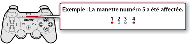

Jeu > Lecture d'un logiciel au format PlayStation®3 > Définition des paramètres du jeu
Définition des paramètres du jeu
Vous pouvez régler les paramètres de la manette pendant le jeu. Durant le jeu, appuyez sur la touche PS de la manette sans fil, puis sélectionnez  (Paramètres) >
(Paramètres) >  (Paramètres accessoires).
(Paramètres accessoires).
Réaffecter la manette
Vous pouvez modifier l'attribution du numéro de manette. Si le numéro de la manette est précisé par le logiciel, attribuez le numéro de manette approprié.
Conseil
Le numéro de manette actuellement affecté est spécifié au-dessus de l'indicateur de port, sur la partie supérieure de la manette. Pour les numéros cinq à sept, additionnez le total des chiffres situés au-dessus des indicateurs de port allumés pour obtenir le numéro de manette.

Fonctionnalité de vibrations de la manette
Vous pouvez activer ou désactiver la fonctionnalité de vibrations. Cette option n'est disponible que si vous utilisez une manette prenant en charge la fonctionnalité de vibrations du système PS3™.
Conseils
- Ce paramètre est disponible pour toutes les manettes prenant en charge la fonctionnalité de vibrations.
- Si cette option est réglée sur [Non], la manette ne vibre pas même si la fonctionnalité de vibrations est activée dans le jeu.